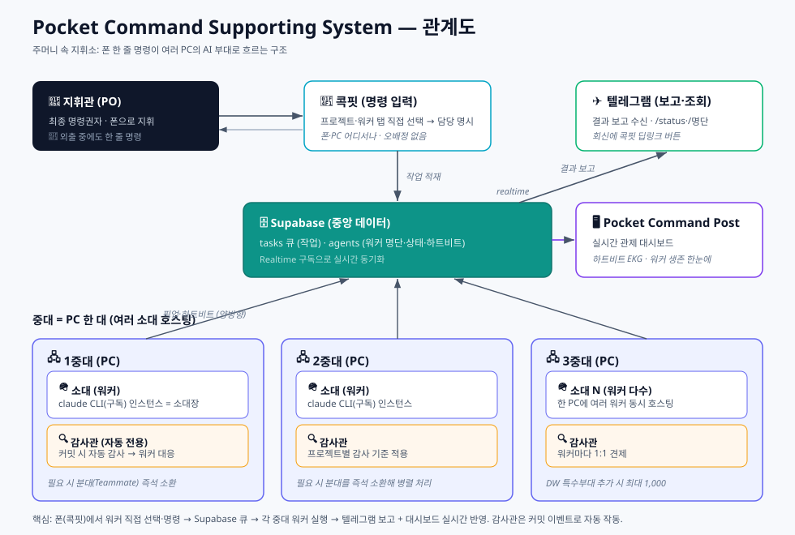
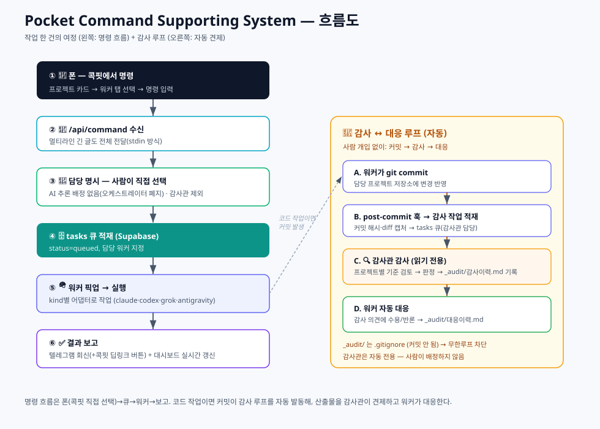

개요 — 한눈에
주머니 속 지휘소
"폰으로 명령하면, 내 컴퓨터들이 알아서 일하는 시스템."
어떤 문제를 푸는가
AI에게 일을 시키려면 보통 컴퓨터 앞에 앉아 화면을 켜고 채팅해야 합니다.
- 외출 중엔 일을 못 시킨다.
- 한 번에 한 가지 대화만 붙잡고 있어야 한다.
- 컴퓨터를 여러 대 두고 동시에 굴리기 어렵다.
Pocket Command Supporting System은 이 셋을 뒤집습니다.
- 폰만 있으면 됩니다. 모바일웹 콕핏에서 프로젝트·워커를 탭으로 골라 명령을 보내면 끝.
- 일은 백그라운드에서 알아서 돌아갑니다. 던져놓고 다른 일 하면 됩니다. 결과는 텔레그램과 콕핏 양쪽으로 돌아옵니다.
- 일꾼(워커)을 얼마든지 늘릴 수 있습니다. 늘릴수록 처리량이 커집니다.
- 한 회사 AI에 묶이지 않습니다. Claude Code · OpenAI Codex · xAI Grok · Google Antigravity가 같은 큐에서 동시에 돕니다.
💡 비유 — 회사 대표가 외근 중에 카톡으로 지시하면, 사무실의 여러 팀이 각자 일을 받아 처리하고 결과를 다시 카톡으로 보고하는 모습. 그걸 AI로 구현한 것.
무엇이 다른가
| 보통의 AI 사용 | Pocket Command Supporting System |
|---|---|
| 컴퓨터 앞에 앉아야 함 | 폰(모바일웹 콕핏)에서 지시 |
| 한 번에 한 대화 | 여러 일꾼 동시 가동 |
| 사람이 매번 시켜야 함 | 이벤트로 자동 작동(예: 커밋되면 자동 감사) |
| 명령도 사람이, 배정은 AI가 추측 | 콕핏에서 사람이 직접 탭 선택 — 오배정 없음 |
| 결과를 직접 확인 | 텔레그램 보고 + 실시간 대시보드 양쪽 |
| 일 시키고 검수도 사람이 | 감사관 AI가 자동 검수하고, 고칠 게 있을 때만 일꾼이 대응 |
| 한 회사 AI에 종속 | Claude·ChatGPT(Codex)·Gemini(Antigravity)·Grok을 한 큐에서 동시 운용 |
| AI가 만든 것을 아무도 안 봄 | 다른 회사 AI가 교차 감사 + 감사 기록 위변조 탐지 봉인 |
핵심 가치는 레버리지 — 사람 개입 없이도 "일하고 → 검증하고 → 후속 조치"가 스스로 돌아간다.
핵심 개념 — 군대 편제로 이해하기
| 편제 | 정체 | 설명 |
|---|---|---|
| 지휘관 | 사람(PO) | 최종 명령권자. 통수권자. |
| 지휘소 | PCSS 자기 자신(워커 "에코" + 전담 감사관) | 이 시스템 자신의 코드를 개발·관리하는 자기참조 카드. (참모장·오케스트레이터는 2026-07-13 폐지 — 배정은 지휘관이 콕핏에서 직접.) |
| 파견 분대장 | 다른 회사 AI 코딩 에이전트 | Codex(OpenAI)·Grok(xAI)·Antigravity(Google). 전용 작업폴더를 받아 실작업을 하고, 산출물은 자동 감사된다. |
| 용병 | 외부 AI 단발 자문 | 전용 폴더 없이 의견만 받는 호출. 실작업·커밋을 하지 않는다. |
| 중대 | PC 한 대 | 여러 소대를 호스팅하는 물리 컴퓨터. |
| 소대 | 워커 한 개 | 실제로 일하는 AI 인스턴스(소대장). Claude Code·Codex·Grok·Antigravity 중 무엇이든 될 수 있다. |
| 분대 | 소환된 팀원 | 소대장이 필요할 때 즉석 소환하는 임시 조력자. |
| 감사관 | 검수 전용 워커 | 특정 워커의 산출물을 자동으로 감사하고 의견을 냄. |
핵심 원칙 — 분대는 미리 만들지 않는다(필요할 때만 소환). 그리고 감사관은 사람이 부르지 않는다(커밋 등 이벤트로 자동 작동).

어떻게 동작하나 — 작업 한 건의 여정
[폰: 콕핏] ──프로젝트 카드 → 워커 탭 → 명령 입력──▶ 담당 명시 적재
▼
작업 큐 (중앙 DB)
│
각 PC의 워커가 큐를 확인 ──▶ 해당 워커가 픽업·실행
│
결과 ◀── 텔레그램 보고(+콕핏 딥링크 버튼) + 대시보드 갱신
- 사람이 콕핏(모바일웹)에서 프로젝트·워커를 탭으로 직접 골라 명령을 보낸다 — AI 추측 배정이 없어 오배정도 없다(2026-07-13 오케스트레이터 폐지).
- 명령이 담당 워커 명시로 작업 큐에 적재된다.
- 해당 워커가 자기 PC에서 작업을 픽업·실행한다.
- 결과를 텔레그램으로 보고하고(콕핏 딥링크 버튼 포함), 대시보드(Pocket Command Post)에 실시간 반영.
감사 루프(자동) — 워커가 코드를 커밋하면 → 감사관이 자동으로 깨어나 커밋을 검토 → 감사 의견을 남기고 → 고쳐야 할 것이 있을 때만 워커가 대응한다. 사람이 끼지 않아도 "작업 → 검증 → 대응"이 돈다.
판정 게이트 — 감사관은 의견 첫 줄에
[심각도] [조치필요/조치불요]를 적는다. 심각도와 "고쳐야 하는가"는 다른 축이다. 조치불요면 대응 워커를 돌리지 않는다 — 예전에는 판정과 무관하게 커밋마다 대응 세션이 하나씩 돌아 "수용, 조치 불요"를 받아내느라 낭비가 컸다.기록 무결성 — 감사 원본은 작업자 저장소 밖의 감사관 전용 폴더에 두고 작업자 폴더에는 사본만 둔다. 원본은 SHA-256 해시 체인으로 봉인되며, 해시 계산은 감사관 AI가 아니라 별도 스크립트가 결정론적으로 수행한다 — AI가 자물쇠를 직접 만들지 못하게 하려는 것이다. 과거 기록이 사후에 바뀌면 체인이 깨져 즉시 드러난다.

주요 기능
- 폰 우선(Phone-first) — 텔레그램이 입출력 채널. 긴 글(문단 포함)도 끝까지 전달.
- 수평 확장 — 워커 추가 = 등록 한 줄 + 프로세스 하나. PC를 더 붙이면 또 확장.
- 실시간 관제 — 각 워커의 생존(하트비트)을 심전도(EKG) 그래프로 표시. 살아있으면 파형, 끊기면 평탄선.
- 자동 기동 — PC를 켜고 로그인하면 그 PC의 워커들이 자동으로 살아난다.
- 감사관(Auditor) — 워커별 자동 검수. 프로젝트마다 감사 기준이 다르다.
- 감사 ↔ 대응 루프 — 감사 의견에 워커가 자동 답변하고 기록을 남긴다.
- 안전장치 — 감사관은 자동 전용(사람이 못 부름), 감사 기록은 커밋되지 않아 무한루프 방지.
기술 구조
스택
- 대시보드: Next.js (App Router) + TypeScript, Vercel 배포
- 데이터/실시간: Supabase(PostgreSQL) —
agents·tasks+ Realtime 구독 - 워커 두뇌(어댑터 방식, 벤더 중립): 워커마다
kind로 실행 엔진을 고른다 —claude_code(claude CLI, 구독 인증, API 키 아님) ·claude_api·codex(OpenAI) ·grok(xAI) ·antigravity(Google) ·python. 큐·상태·감사 파이프라인은 어느 엔진이든 동일하게 동작 - 입출력: Telegram Bot (Webhook + sendMessage)
- 호스트: 각 사용자 PC — 워커는 Node(tsx) 데몬
데이터 모델 (핵심 2테이블)
agents: name·role·squad(중대)·kind(python/claude_code/claude_api/codex/grok/antigravity)·host(PC)·workdir·status·last_heartbeat_at·beatstasks: command_text·assigned_agent·status(queued/in_progress/done/failed)·source_chat_id·result- v3.1부터
hosts·platoons·platoon_runs·audits·events추가. 콕핏 인박스(예외함·승인함·충돌 경고·감사 대응)는events를 구독해 표시
컴포넌트
[콕핏(모바일웹)] ─프로젝트·워커 탭 선택─▶ /api/command
│ 담당 명시 적재
▼
tasks 큐(Supabase)
▲ 폴링/픽업
각 PC: agent-runner.ts 데몬 ──────┘
- 하트비트(5초) · 큐 픽업·실행(kind별 어댑터: claude/codex/grok/antigravity)
- control='stop' 즉시 kill · 결과 → tasks.result + Telegram(+콕핏 딥링크 버튼) + 대시보드
[Telegram] ─webhook─▶ /api/telegram — /status·/명단 조회 전용(명령 아님)
핵심 메커니즘
- 하트비트/생존감지 — 5초마다 갱신, 끊기면 offline (Supabase 호출 타임아웃으로 stale 소켓 정지 방지)
- 명령 전달 — 프롬프트를 셸 명령줄이 아닌 stdin으로(Windows cmd.exe 멀티라인 첫 줄 잘림 회피)
- 감사 파이프라인 — repo의
post-commit훅 → 커밋 정보 캡처 → 감사 작업 적재 → 감사관 검토 → 원본은 저장소 밖 vault(<repo의 부모>/_audit_vault/<repo 이름>/), 사본은 repo의_audit/(gitignore) → 해시 체인 갱신 → 판정이[조치필요]일 때만 워커 대응 적재. 비기능 커밋(docs/chore/style/ci)은 자동 생략하되 의존성 변경은 항상 감사 - 감사관 격리 — 소스 읽기 전용, 사람의 명령 배정 대상이 아님(커밋 이벤트로만 작동하는 자동 전용). vault가 저장소 밖이라 작업자는 자기 저장소만 다뤄서는 원본에 닿지 못함(경로로 갈라 둔 물리적 격리)
- 외부 벤더 격리 — codex·grok·antigravity 프로세스에는 DB 키·봇 토큰·API 키를 환경변수에서 제거한 채 전달하고, 쓰기 범위는 자기 작업폴더로 제한. 감사 대응 기록도 워커에 권한을 주지 않고 러너가 대신 남김
운영 스크립트
start-workers.ps1/install-autostart.ps1— 로그온 시 자동 기동update.bat— git pull + 의존성 + 이 PC 워커 재기동(원클릭)install-auditor.ps1— repo에_audit/+ gitignore + 훅 설치scripts/enqueue-audit.js— post-commit → 감사 작업 적재scripts/audit-integrity-check.js— 감사 원본 해시 체인 기록·검증scripts/audit-paths.cjs·audit-verdict.cjs·audit-response-scan.cjs— 경로 규칙·판정 규격·대응 헤더 파싱의 단일 출처
직접 만들기 — 재현 가이드
- Supabase 프로젝트 생성 →
agents·tasks스키마 적용 - Telegram 봇 생성(BotFather) → 토큰 → Webhook 등록
- 대시보드 배포(Next.js → Vercel) + 환경변수(Supabase·텔레그램)
- 워커 데몬 설치: 각 PC에 쓰려는 AI의 CLI(claude 구독 로그인 / Codex / Grok / Antigravity 중 필요한 것) + Node + repo 클론 → 워커 기동
- 에이전트 등록:
agents에 워커 한 줄 추가(host=그 PC) → 자동 기동 포함 - 콕핏 프로젝트 매핑:
config/projects.json에worker/auditor(agents.name과 일치)로 프로젝트 카드 정의 - (선택) 감사관:
install-auditor.ps1로 프로젝트에 감사 파이프라인 장착
⚠️ claude는 구독(OAuth) 인증으로 호출. API 키를 끼우지 않도록 환경변수를 정리한다.
소스: github.com/SUNWOONGKYU/pocket-command-system (Apache-2.0)
한계와 주의점
규모가 커질수록 유의해야 할 지점들.
- 보안 — 워커가 강한 권한으로 코드를 실행하고 명령 채널이 텔레그램이다. 봇/챗 접근이 곧 PC 제어가 될 수 있어, 규모가 커지면 발신자 인증이 필요해진다.
- 오류 전파 — 무인 트리거가 엮이면 한 워커의 잘못된 출력이 다음 입력이 되어 누적될 수 있다. → 그래서 감사관(검증 워커)을 둔다.
- 관제 부하 — 워커가 많아지면 텔레그램 보고가 홍수가 된다 → 중요도 필터가 필요.
- 비용 — 워커 수보다 트리거 빈도에 비례. 커밋 폭주 시 감사 큐가 쌓일 수 있다.
비교 — Hermes Agent와 Pocket Command Supporting System
Pocket Command Supporting System은 잘 알려진 에이전트 하네스 Hermes Agent(NousResearch)의 설계를 출발점 삼아 만든 재구현이다. 유명한 기준점에 붙여 보면 이 시스템의 위치가 빨리 잡힌다 — 무엇이 이미 있던 것이고 무엇이 우리가 따로 만든 것인지.
⚠️ 성능 벤치마크가 아니라 공개 문서 기반 설계 비교다. 상대 프로젝트는 계속 발전하므로 세부 수치·기능 목록은 이 문서에 적지 않는다 — 정확한 현황은 해당 프로젝트 공식 저장소를 직접 확인할 것.
"멀티 워커·오케스트레이션·공유 작업보드·멀티호스트·메신저 연동"은 Hermes Agent에 이미 있는 공통 토대다 — 우리만의 차별점이 아니다.
공통 토대 (Hermes Agent가 원조, 우리도 채택)
- 멀티 워커 + 오케스트레이션 — 상위 역할이 하위 워커를 스폰하는 구조
- 공유 작업보드 — 작업을 DB 행으로 두고 워커가 독립 OS 프로세스로 집어가는 방식. 우리 Supabase
tasks큐와 동형 - 여러 실행 백엔드에 워커를 분산 배치(로컬·컨테이너·원격 등)
- 메신저 채널 연동·상시 가동·스킬·스케줄·작업 분해·전문 역할
Hermes Agent가 더 성숙/우위인 축
- 영속 기억 + 자기 학습 루프(실행→평가→개선, 세션을 넘는 회상)
- 지원 메신저 채널의 폭과 입력 modality(음성 등)
- 경량·이식성, 보안 설계, 오픈소스 생태계의 성숙도
Pocket Command Supporting System의 실제 차별점
- 벤더 교차 운용·교차 감사 — Claude Code·Codex·Grok·Antigravity가 같은 큐에서 돌고, 한 벤더의 산출물을 다른 벤더의 에이전트가 읽기 전용으로 검수한다. 외부 CLI에는 자격증명을 넘기지 않고 쓰기 범위도 자기 폴더로 제한한다.
- 감사관 견제 거버넌스 — 워커의 자기 점검이 아니라 독립된 감사관이 커밋을 자동 감사하고, 판정이
[조치필요]일 때만 워커가 대응한다. - 감사 기록 무결성 — 감사 원본을 작업자 저장소 밖에 두고 해시 체인으로 봉인한다. 해시 계산은 감사받는 AI가 아니라 별도 스크립트가 수행하므로, 검사받는 쪽이 자물쇠를 만들 수 없다.
- 군대 편제 UX + 부대 관제 대시보드 — 일관된 지휘 메타포 + 하트비트 EKG. 작업 목록 중심이 아니라 부대의 생존·상태 중심 화면.
한 줄 — Hermes Agent는 "스스로 자라는 범용 에이전트 런타임", Pocket Command Supporting System은 "여러 벤더 AI를 폰에서 지휘하고 서로 감사시키는 거버넌스" 버전. 닮은 토대 위에 벤더 교차 감사·기록 무결성·편제 UX를 얹은 것이 본질이다.
참고: NousResearch/hermes-agent 공개 문서 기반. 이 비교는 학습용 좌표이지 우열 판정이 아니며, 상대 프로젝트의 현재 사양은 해당 저장소에서 확인하는 것이 정확하다.
용어집
| 용어 | 뜻 |
|---|---|
| 지휘관(PO) | 사람. 최종 명령권자. |
| 지휘소 | PCSS 자기 자신을 개발·관리하는 자기참조 워커 카드. (참모장/오케스트레이터는 2026-07-13 폐지 — 배정은 콕핏에서 사람이 직접.) |
| 중대 / 소대 / 분대 | PC / 워커 / 즉석 소환 팀원. |
| 감사관(Auditor) | 특정 워커의 산출물을 자동 검수하는 전용 워커. |
| 하트비트 | 워커가 살아있음을 주기적으로 알리는 신호(대시보드 EKG). |
| 워커(Worker) | 실제 작업을 실행하는 AI 데몬 프로세스. |
| 파견 분대장 | 전용 작업폴더를 받아 실작업을 하는 다른 회사 AI 코딩 에이전트(Codex·Grok·Antigravity). 산출물은 자동 감사된다. |
| 판정 게이트 | 감사 의견 첫 줄의 [조치필요/조치불요] 표식. 조치불요면 대응 워커를 돌리지 않는다. |
| vault(감사 원본) | 작업자 저장소 밖에 있는 감사관 전용 보관소. 해시 체인으로 봉인된다. |
| Pocket Command Post | 이 시스템의 대시보드(관제 화면) 이름. |